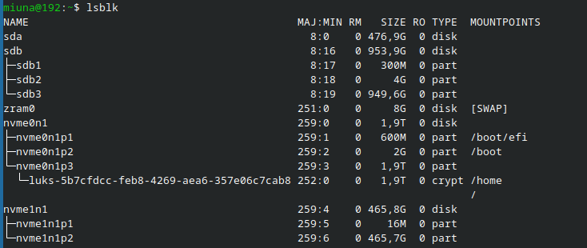
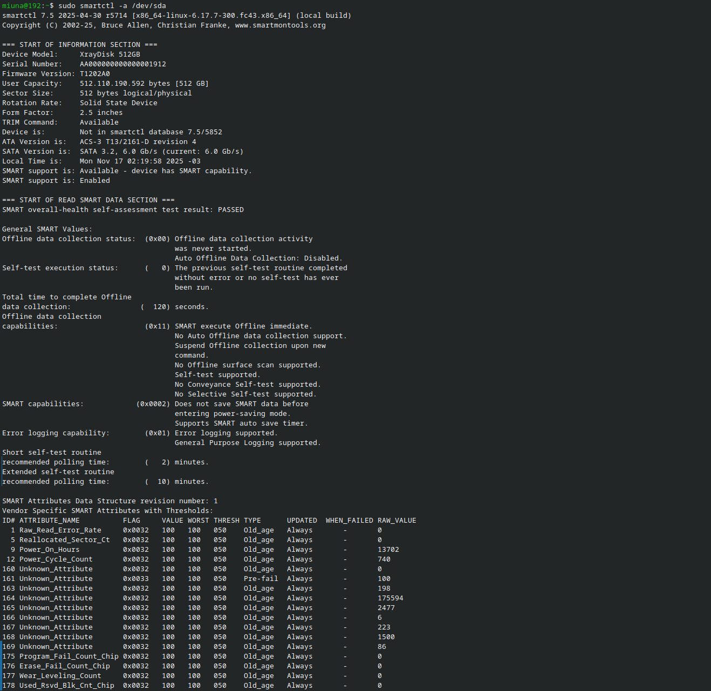
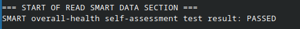
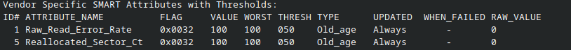
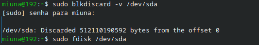
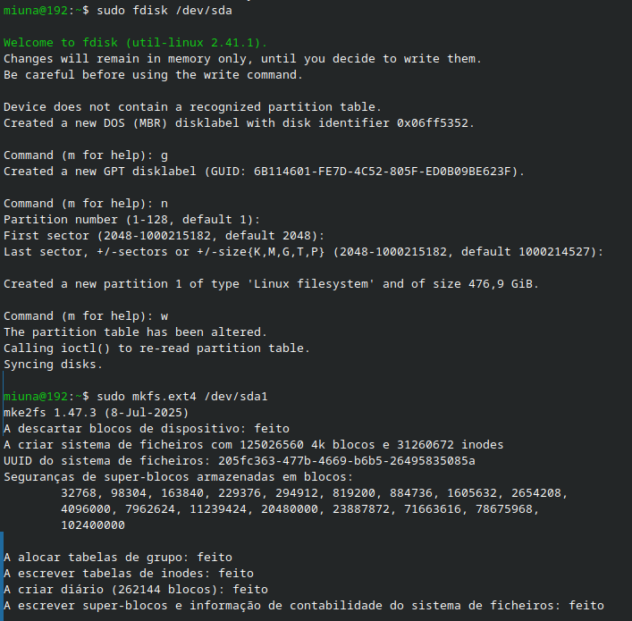

sabe aquele ssd antigo q ta ai parado? e quer saber se ele ta bem antes de usar?
hoje, a gente vai fazer o full check-up e depois o full reset nele usando o terminal do fedora!
Verificando a Saúde com Smartmontools
primeiro, vamo ver se o ssd ta saudavel ou se ele ta morrendo…
a gente usa um programa chamado smartmontools:
sudo dnf install smartmontoolsagora, vc precisa saber o "nome" do seu disco. roda lsblk pra ver. o meu era /dev/sda.

com o nome, roda o teste de saude:
sudo smartctl -a /dev/sda
o q olhar no resultado? o mais importante eh essa linha:
SMART overall-health self-assessment test result: PASSED
tambem eh legal olhar o Reallocated_Sector_Ct (ID 5). se o RAW_VALUE tiver 0 (zero), ta perfeito!

Limpando o SSD com blkdiscard
ok, o meu ssd tava PASSED.
mas ele era um disco extra (meu fedora tava em outro) e eu queria apagar tudo e deixar ele limpinho.
o comando abaixo vai apagar tudo no disco. nao tem volta. nao tem 'desfazer'. tenha certeza q eh o disco certo! (no meu caso, /dev/sda)
sudo blkdiscard /dev/sda
se funcionar, ele vai falar tipo:
/dev/sda: Discarded 512110190592 bytes from the offset 0limpinho.
"mas apagou mesmo? da pra recuperar?"
e a resposta é: nao, nao da pra recuperar.
o blkdiscard usa o TRIM. ele eh diferente de formatar um hdd antigo.
- ele nao escreve zeros em cima dos dados, que nem feito na formatação segura de um hdd.
- ele fala direto pro controlador (o chefe do ssd): "ei, pode jogar fora o 'mapa' q leva pra esses dados. nao preciso mais."
o dado fisico (os elétrons) ate pode ficar la no chip por um tempinho, mas o controlador nao deixa mais ninguem ler! se qualquer programa tentar ler, o controlador so devolve zero.
entao, pra gente, o dado sumiu 100% no segundo q o blkdiscard rodou.
Formatando
agora o ssd ta limpo, mas ele nao tem "gavetas" (partições) pra guardar coisas.
Criando a partição (fdisk)
pra criar a partição, a gente usa o fdisk:
sudo fdisk /dev/sdala dentro do fdisk, vc so precisa apertar as teclas e dar enter (em ordem):
g(pra fazer uma tabela gpt nova)n(pra uma partição nova)enter(pra aceitar o numero da partição)enter(pra aceitar o primeiro setor)enter(pra aceitar o ultimo setor, usando o disco todo)w(pra salvar e sair)
Formatando a partição (mkfs.ext4)
vamos usar o ext4 que é perfeito pra linux, eh o padrão e super estável.
agora a gente usa sda1 (a partição), nao mais sda (o disco)!
sudo mkfs.ext4 /dev/sda1
pronto!